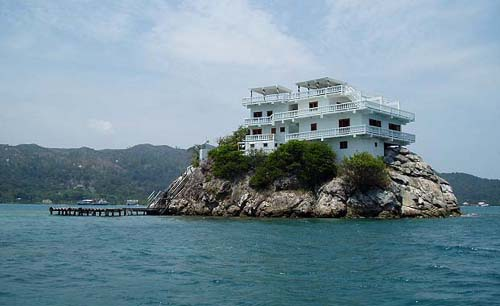
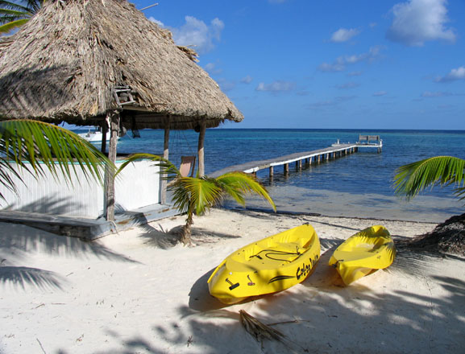

© Copyright U.S. Dive Travel Network.
U.S. DIVE TRAVEL's INDEX of BEST DIVE RESORTS --
PACIFIC & CARIBBEAN DIVING ISLANDS
WELCOME to a WORLD of ...
Unsurpassed
Service
+
Uncompromised
Safety
+
Unspoiled
Seascapes
+
Unhurried
Serenity
=
U.S. DIVE TRAVEL
NETWORK
TM
Diver / Snorkeler Hotline: 952-953-4124.
E-mail: divetrip@bitstream.net
U.S. Dive Travel
St. Paul, Minnesota
U.S.A.
|

Alluring VILLA at DUNBAR ROCK, Guanaja Island, Honduras.

BLACKBIRD CAYE RESORT, friendly Belize.
|
AUSTRALIA:
HERON ISLAND is on the far-southern Great Barrier Reef, just east of Gladstone, Oz. Pacific travel experts agree that this property is among the best-value 3-star resorts for tropical snorkeling & scuba diving on the Great Barrier Reef of Australia. HERON ISLAND RESORT offers vast acres of corals, stunning in brilliance
& density. Many of the most vivid and visually engaging coralheads near HERON ISLAND RESORT are found
in only 2 - 4 meters of warm clear water, close offshore. Plus there's plenty of exceptionally colorful boat
diving available near HERON ISLAND, Australia, for vacationers who crave more color-rich scuba diving. With its many
options for private rooms & suites, HERON ISLAND RESORT is comfortably designed for couples seeking romantic honeymoon
getaways or family scuba vacations. The subtly and frequently sheen-shifting turquoise hues of the HERON ISLAND lagoon are
relaxing & re-energizing. For new divers, this is one of the best snorkeling destinations + best dive resorts in the Western Pacific; & a
perfect place for "Need-to-Get-Lost-in-the-Big-Blue" vacations. Give HERON ISLAND RESORT a dive tour whirl. And of course, g'dye mytes !
AUSTRALIA:
LIZARD ISLAND is on the Northern Barrier Reef, just north of Cooktown in Queensland waters. LIZARD ISLAND RESORT is one of the most renowned and sought-after 5-star luxury dive resorts in the world & has been lauded by international hotel-rating agencies & travel magazines for many years.
The LIZARD ISLAND RESORT reputation has been as classic & time-honored as that of Rolls Royce, Rolex or Remy-Martin. One friendly caveat: wise to begin your reservations process at least 8-10 months early, since the preferred rooms are very challenging to secure on an latecomer basis. This is the unrivaled crown jewel of Australia's Great Barrier Reef & is perfectly matched to clients who demand nothing less than tropical vacation perfection -- from meals to amenities to the TLC client-attentive service. There is no better resort island on the Great Barrier Reef -- for snorkeling vacations or dive tours -- than LIZARD ISLAND, the epicenter of Queensland dive tours. What's more, the resort regularly enacts a sweeping renovation project that only augments the brilliance of LIZARD ISLAND RESORT. We recommend LIZARD ISLAND RESORT without reservation. (Actually mates, you must secure reservations, to be abso-bloomin-lutely precise. :)
BELIZE BARRIER REEF, Turneffe Atoll:
BLACKBIRD CAYE RESORT.
The BLACKBIRD CAYE RESORT is a beautiful 4-star operation, a laid-back down-home reef-rich place to stretch out, that will confer an easy-breezy vacation feeling. Some summers -- like this one -- we can offer you a wholesale-savings package -- "Stay 7 Pay only 4 Nights!" BLACKBIRD CAYE RESORT encompasses about 222 acres on a much larger 1402-acre island, not far from the famous Blue Hole dive site. BLACKBIRD CAYE RESORT offers miles of hiking trails & tawny-sand beaches, so you can really pound sand & go for pleasant walks. We consider BLACKBIRD CAYE RESORT to be one of the best & brightest Belize snorkeling and Belize diving resorts in this Caribbean nation. BLACKBIRD CAYE RESORT is a bona fide Belizian beauty, truly; &' our pick for best-value luxury diving resort on all the Belizian Barrier Reef. Check out the delightful photos, recently shot.
HOT TIP for a SIDE TRIP: ask about our exotic & affordable tours of the towering Tikal Ruins in Guatemala, & the world-renowned mainland Belize sites of Xunantunich Ruins, the Belize Zoo, Mountain Pine Ridge Forest Preserve (where we saw a jaguar a few feet from our car the 1st 10 minutes after we entered the park!), the Guanacaste Forest & beautiful WINDY HILL RESORT in San Ignacio, a serene back-country village in the heart of Belize eco-tourism. CHECK our BRAND-NEW PHOTOS of the TIKAL RUINS & CARACOL RUINS. These Mayan ruins are astonishing in their sheer enormity & complexity; we were humbled, blown away by the experience ... A brilliant 4-star property on a private island about 50 miles from the mainland, our favorite Belize dive resort is BLACKBIRD, located about 32 nautical miles SE of Belize City, on Turneffe Atoll. Many photographerss & dive guides -- veterans of world-class dive tours -- believe that the corals & fish life of Turneffe Atoll rank near the apex of Caribbean scuba diving.
On a 220-acre sandy isle, BLACKBIRD is one of the BEST SNORKELING VACATION RESORTS & BEST DIVE RESORTS in the Caribbean, worthy of a solid four star rating, perfect for stressed-out biz exec's & couples needing a serious getaway from gritty city worries.
BONAIRE:
SAND DOLLAR CONDOMINIUMS.
Located on the South Shore of Bonaire, SAND DOLLAR CONDOMINIUMS are a spiffy 4-star resort with some of the easiest & safest scuba diving from shore-- right next to the beach -- that you'll find anywhere in the Caribbean. Aficionados of SAND DOLLAR CONDOMINIUMS know other great Bonaire dives are from boats 1/4 mile from shore, along the fringing reefs, or up in the remote countryside coves. Sand Dollar is a dedicated haven for marine photography
buffs -- both scuba divers & snorkelers. The prime claim to fame for
Sand Dollar Condominium Resort is that it's located on a tract where beaches
are only 50 yards from the edge of a vast diving wall that stretches for
miles along southern Bonaire's protected shoreline. The South Bonaire water is warm,
the currents usually tame, & the visibility often reaches 75-100 feet,
making Bonaire one of the Caribbean's most popular destinations for scuba divers
& snorkelers. SAND DOLLAR CONDOMINIUMS are affordable & clean, the condos are quiet & comfy; & the management prides itself on TLC service with a careful eye for details. The SAND DOLLAR CONDOMINIUMS dive shop is conveniently located right on site; & many fun dive sites are only a few kick cycles from shore. Sand Dollar Condominiums get our vote for a dependable family locale, with activities for kids & plenty of safe beach play. SAND DOLLAR CONDOMINIUMS are not just for dive tours, they are perfect for dedicated beach baskers, too. This is a perfect locale for honeymooners, families & snorkeling aficionados. Give Sand Dollar a whirl, amigos del mar. You'll be mighty glad. Among our select few favorites, this is one of the BEST SNORKELING VACATION RESORTS & BEST DIVE RESORTS anywhere in the Big Caribe :)
COOK ISLANDS, Aitutaki Atoll:
ARE TAMANU RESORT
ARE TAMANU RESORT is a friendly 3-star getaway on Aitutaki Atoll north of Rarotonga island.
This locale is regarded as the best-value vacation property on Aitutaki &
one of the best deals in all the Cook Islands. For years travel writers
have labeled Aitutaki Lagoon one of the most photogenic & hypnotic
coral atolls on earth. The ocean water near the ARE TAMANU RESORT is jewel-like. The little dive shop on Aitutaki Lagoon is a fun-loving, easygoing company that will show you a good time, whether you focus on snorkeling or scuba diving. Aitutaki Lagoon is the color-saturated soul of the Cook Islands. Dive resorts do not get much lovelier than this one -- lovely ARE TAMANU RESORT.
COOK ISLANDS, Rarotonga island:
EDGEWATER RESORT. The EDGEWATER HOTEL is a high-value 3-star
high-rise on Rarotonga, the country's capital island. The EDGEWATER HOTEL has a great
beachfront, splendid views of the perimeter reef, & a pool & tennis
courts right next to the shooshing surf. The EDGEWATER HOTEL staff attitude & resort
ambiance are soothing. Just as you'd see on Tahiti island, towerlike peaks looming
above nearby jungles might inspire you to take some inspirational inland treks. The Cook Islands were the jump-start of our adventure diving career, & we would love to share some of that tropical island esprit' with you! Try EDGEWATER HOTEL and your tropical vistas will widen, big time....
COSTA RICA:
VILLAS SOL RESORT / BILL BEARD'S DIVING SAFARIS on the Pacific
Coast, is a new 3+star hotel with the country's leading scuba operation
right next door. It's a great combo, sure to give you fine vacation value. VILLA SOL HOTEL, formerly called Sol Playa Hermosa Hotel, has
two beautiful swimming pools & excellent dining facilities, plus clean modern rooms. We also rep 6 other nice
mid-range hotels in this immediate area, in case the VILLA SOL HOTEL is filled. Happens a lot, as Costa Rica diving is becoming ever more popular, as word of mouth filters back to the States about this lovely lodging of VILLA SOL HOTEL in the village of Playa Hermosa.
Bill & Nadine Beard founded the best & most experienced scuba diving guide service in Costa Rica -- more than 30 years ago -- & now new owners have taken over, following the Beard's traditions with a refreshing new twist. This dive shop rocks, check them out.
HOT TIP for a SIDE TRIP: Eco-tours in the heartland of Costa Rica!
VILLA SOL HOTEL & BILL BEARD'S DIVING SAFARIS are within a mellow day's drive of five national parks, wildlife
sanctuaries, active volcanoes, hot springs & biological preserves -- the glory of inland Costa Rica. There's a vast number of great hikes, gentle
to strenuous, whatever you want, if you're willing to hoof it for verdant views. Costa Rica's eco-adventures are
one of its top international claims to fame. The cloud forests in and near the Guanacaste Mountains are
world-renowned. Once BILL BEARD'S DIVING SAFARIS brings you back from their magical scuba diving world, your
appetite for eco-tours may be keen. If so... read further on down the Costa Rica page. We have eco-travel
energy -- to the max -- down in verdant Costa Rica! BILL BEARD'S DIVING SAFARIS is as pro as they go -- just stellar guides.
CURACAO:
LIONS DIVE and BEACH RESORT.
LIONS DIVE & BEACH RESORT is the best-value 3-star dive resort on this friendly and fun Dutch island. This friendly locale is one of the classic dive resorts in the "ABC Islands" of the far-southern Caribbean. The beachfront at LIONS DIVE & BEACH RESORT is clean, serene, a great little getaway. Ocean Encounters offers safe & easy dive tours from walls & coral gardens to sloping reefs & wrecks. Experience the dive sites that make Curacao a top destination in the Caribbean, especially suited to new divers or snorkeling enthusiasts. Such sites visited by LIONS DIVE & BEACH RESORT boats each day include the classic "house reef" at the Seaquarium, plus East Point, Lost Anchor, Barracuda Point, Beacon Point, the wreck of the Superior Producer, the good ol' Tugboat & many more worthy dive sites. Try the LIONS DIVE & BEACH RESORT + Ocean Encounters dive duo & we believe you will come back for more of this Curacao scuba diving & snorkeling fun.
FIJI ISLANDS, Matangi island:
MATANGI ISLAND RESORT
is a wonderful rustic 4-star property just
a few miles north of Taveuni in NE Fiji. One of many claims to fame here at MATANGI ISLAND is a coral-rich
lagoon just offshore where you can enjoy safe & brilliant snorkeling or shore diving. MATANGI ISLAND RESORT (also known as Matagi Island from the classic ancient Fijian spelling) also offers 3 luxurious private honeymoon treehouses overlooking the water & estate. Meals are amazing every day & the portions generous at the tables of Matangi Island Resort (Matagi Island). For much of each year we offer a wholesale special -- "Stay 7 Nights & Pay Only 5!" Dive tours don't get much sweeter than this ! NOTE: We also now offer LALATI ISLAND RESORT down in southern Fiji, in the world-renowned Beqa Lagoon sector, so ask us about combining MATANGI ISLAND & LALATI ISLAND on colorful 2-week Fiji dive vacations. MATANGI ISLAND or Matagi Island, however one spells it, this is as beautiful as it gets in the Sunny SoPac, amigos del mar! Once more, we confer upon this island the deserved title of BEST SNORKELING VACATION RESORT & BEST DIVE RESORT we have ever repped in Fiji, likely even the SoPac.
FIJI ISLANDS, Vatulele island:
VATULELE ISLAND RESORT
is a 5-star luxury lodge on a private atoll just south of Viti Levu island. Like Australia's Lizard Island, or Lanai's Koele Lodge, VATULELE ISLAND is one of the world's finest on-reef hotels, featuring impeccable decor, brilliantly refined service,
cuisine & amenities that are without peer in all the Fiji Islands. (NOTE: Until further notice, Vatulele will be closed, local officials reported, while possible new buyers may be considering a purchase.) Few folks ever get to experience a tropical dive resort like VATULELE ISLAND. All who are blessed to visit VATULELE ISLAND say their lives are changed forever by the beauty & serenity.
VATULELE ISLAND RESORT is beyond the scope of trivial advertising. You have to see VATULELE, drink in the visual beauty for days, to really understand its exceptional charm. No webpage nor brochure re' Fiji diving or Fiji Islands snorkeling ever really could capture this vivid Fiji vacation spirit at VATULELE ISLAND RESORT.
FIJI ISLANDS, Kadavu island:
MATAVA RESORT
is one of the most exciting new destinations we have discovered in the South Pacific in 3 decades. MATAVA RESORT is such a uniquely gifted green retreat, that it now ranks among our top seven small resorts anywhere in the Pacific. MATAVA is run by purpose-driven men who refuse to fudge even a bit on what they know to be true: this beautiful planet is in trouble from careless developers & wanton resource sponges. Thus it needs daily TLC, from every caring person, to restore a healthy balance. These gents at MATAVA RESORT have green ethics down to a fun, unpretentious system. MATAVA RESORT is the only vacation destination of note on the entire 65 km of nearly wilderness south Kadavu shoreline. While MATAVA RESORT is a comfy 3½ star retreat, offering lush gardens, well-manicured lawns, delightfully rustic cabanas & meals to-die-for delicious, it is also the only resort close enough to the famed Astrolabe Reef to reach most dives in a wink. The Astrolabe Reef is one the world's greatest living coral expanses. The game fishing & snorkeling are amazing here!
HAWAII, Molokai island:
MOLOKAI LODGE / KAUPOA BEACH CAMP &
Eco-adventures via local dive & fishing shop.
At long last, the shy little isle of Molokai may open up soon for scuba diving vacations. And we are feeling stoked, funseekers, after waiting many years for this moment! Molokai is so rarely visited by North American tourists, we sense a watershed moment here for serious snorkelers & scuba divers, who like us are searching for something fresh, sweet-spirited & untrampled, a little wild & yet still comfy. Visually compelling, spiritually invigorating, emotionally healing. We call that a "Tropidelic" Hawaii vacation! You can find something for everybody at MOLOKAI LODGE -- scuba diving, snorkeling, mountain biking along 3,900-ft sea cliffs, archery, horseback riding, skeet shooting, serious hiking & mountain trekking, sea kayaking & cultural tours. The original MOLOKAI RANCH LODGE, is a classic hunting lodgy 4-star luxury getaway, with a huge Great Room & massive log beams & buttresses, a chandelier & wood paneling Robert Redford might envy in his mountain retreat. The crystal-clear pool, glowing green lawns & indigenous-flora garden are something to behold, & the meals are more art than cuisine. We were treated like ohana (family) by all the staff & it felt so much like home after a few hours, we had to pry ourselves away to take the tours. Susan & I like to shake a leg on our vacations, we're always moving, but we could see how easy it would be to melt into a lounge chair there at Molokai Lodge & just vegg away a couple days to decompress from our city stress. Some day.... There's also the new KAUPOA BEACH CAMP, is an astonishing place, unique in the Pacific -- a cushy tent-bungalow village on the wild west end of the island. There are 40 neatly built "tentalows" & they are 100% comfortable, clean, right near the two pocket cove beaches. These sturdy high-walled canvas bungalows, stretched over aluminum frames, are built atop spacious wooden platforms with a bathroom, huge hotwater shower & a private deck. The showers & toilets are super-clean & solar powered, designed impeccably for minimal impact on the earth. Honkin' healthy wild turkeys strut the grounds like they own the place, & rare Hawaiian monk seals flop around happily all over the beaches, wherever they feel like planting their flubber. This is stylish tropical camping, amigos, & perfect for families with kids, big church groups, or a passel of dive shop buddies from Michigan. It's a cool new take on 21st century camping. MOLOKAI LODGE & KAUPOA BEACH CAMP, try these on for size, sunseekers. We were amazed at the serenity and brilliance of the MOLOKAI LODGE on Molokai Ranch. This little island rocks!
HAWAII, Kauai island:
KAUAI SANDS HOTEL / BUBBLES BELOW
The KAUAI SANDS HOTEL is our vote for the best-value 3-star vacation property in Kapa'a, Kauai,
right on a beautiful stretch of surf-lapped beach & within close walking
distance to many nightclubs, restaurants & fun shopping areas. Since
1992's Hurricane Iniki, Kauai has fully rebuilt even beyond its fine form of days
past. In fact, the staff at KAUAI SANDS HOTEL will bend over backwards to make you happy;
& there are many primo vacation deals to be found on Kauai as they
strive to lure tourists back. Linda Bail, expert diving guide & owner of BUBBLES BELOW on Kauai,
has long been respected in Hawaii scuba circles for her fine underwater photography & thorough
knowledge of Kauai & Niihau marine species. This dedicated, hard-working gal is one main reason to
dive Kauai, year after year. She's the best guide on a beautiful island; God bless her family & BUBBLES BELOW associates. KAUAI SANDS HOTEL is a friendly gracious place to stay; you will be glad you stopped in, we assure you. BUBBLES BELOW is the dive guide service of choice on Kauai.
HOT TIP for a SIDE TRIP: 3-tank All-Day Diving Adventures to the Mysterious "Forbidden Island" of Ni'ihau! In August & September the channel waters are calm enough to make the crossing to this extraordinary wild island. Ni'ihau is the last true sanctuary for full-blooded native Hawaiians, who still speak their mother tongue & raise their children by the old sacred ways of the Hawaiian kahunas. Ni'ihau is the coolest dive trip in the Hawaiian Islands, & one that very few mainlanders will ever get to see. We've been to Ni'ihau; we've tasted its raw magic; & it is without question an awe-inspiring dive tour that occupies the pinnacle of Hawaii scuba diving! When you visit Kauai, the KAUAI SANDS HOTEL & BUBBLES BELOW Diving are the way to go, our agency has learned.
HAWAII, Maui island:
LAHAINA INN + LAHAINA DIVERS.
Prices at this classic historical LAHAINA INN are at least USD $140 per room night below the average lodging cost on Maui's famous Ka'anapali Coast, where the beautiful people pay far too much to play, wine & dine. For the price of three nights on the Ka'anapali Coast, you can spend a delightful week in downtown Lahaina, only 2 minutes stroll from the waterfront. Clean, quiet, managed by pleasant folks who truly accommodate you, LAHAINA INN is nestled smack dab in the heart of this vibrant, colorful village. LAHAINA INN is only walkin' minutes from all the nighttime action, the best restaurants, art galleries, shops & it's less than 3 blocks easy jaunt from the Lahaina Boat Harbor, where LAHAINA DIVERS two beautiful vessels are moored. LAHAINA INN is a diamond amongst the pearls of West Maui's pricey luxury hotels, one of the best deals we have found on Maui in 15 years. Two big reasons why: meal costs & transportation costs are lower. First, in Lahaina village you can walk almost everywhere you need to go. Next, meals in Lahaina will run at least 25% - 30% more economical than in Wailea or the Ka'anapali Coast area. What's more, this classic country-style guest inn is perfectly located -- within quick strolling distance from the best scuba center in the village -- LAHAINA DIVERS. We have worked with LAHAINA DIVERS for more than 14 years now, & since day one they have had the top-rated diving yachts on Maui -- big powerful Newton 46s -- the "Dauntless & the Dominion" -- with twin Cummins turbo-Diesel 430s. A dive op that's respected widely in Hawaii, LAHAINA DIVERS has two strappin' power yachts that are among the largest & fastest Coast Guard certified diving vessels in the Hawaiian Islands. At least 3-4 times a week there are exciting day trips from Maui across the big channel to dive at Lanai, the exclusive isle where Bill Gates was married. Plus they visit the famous Molokini Crater, both inside & outside wall, several times a week. We have known Greg Howeth, the owner of LAHAINA DIVERS, for more than 14 years. He is salt of the earth, salt of the sea, easy to work with & a gentleman of his word. His crew is smart, savvy & friendly as the day is long. These guys are pros, from guages to gunwales, & they have served scores of our good Maui diving clients since the early 1990s. For scuba divers, LAHAINA DIVERS is the class act on the isle of Maui, plus our vote for BEST DIVE SHOP in HAWAII, period.
HAWAII, Maui island:
MAUI GUEST HOUSE, LAHAINA.
Here is a chic yet surprisingly affordable way to beat the high cost of dive trips & snorkeling vacations on Maui. This lovely luxury home, right near Lahaina's scuba diving nexus, is one one of our best secret getaways on an island where vacation costs are spiraling into the stratosphere. You will be astonished at the high quality & low price of this MAUI GUEST HOUSE. Here is one of the best Hawaii honeymoon or Hawaii vacation bargains we have discovered since the early 1990s. The MAUI GUEST HOUSE & the EXTENDED HORIZONS dive operation are only a few quick minutes drive from each other, super convenient. The MAUI GUEST HOUSE offers a lush green yard with colorful gardens, a private swimming pool & 4 deluxe rooms, each with private Jacuzzi or hot tub + elegant bathroom + garden lanai + TV-VCR-DVD + Queen bed + full use of kitchen, laundry & high-speed Internet access. MAUI GUEST HOUSE is nestled in one of the prettiest areas in north Lahaina, Maui, only a block from a big public beach. On a beautiful yet spendy-elite island, the MAUI GUEST HOUSE is far & away Maui's best lodging deal we know of -- anywhere in or around Lahaina -- which is West Maui's cultural nerve center. You will save from $120 to $150 per night below the costly Ka'anapali & Wailea sectors of Maui & still enjoy the same delightful creature comforts + super-swift access to Maui's most well-known scuba diving center. A dive op that's respected widely in Hawaii, EXTENDED HORIZONS has a big fast twin 215 hp Diesel vessel that can scoot across to Lanai island in under 35 minutes most days. EXTENDED HORIZONS are specialists in diving the unspoiled classic sites of Lanai island -- across the Auau Channel from Maui. At least 3-4 times a week there are exciting day trips from Maui across the big channel to dive at Lanai, the exclusive isle where Bill Gates was married. For scuba divers, EXTENDED HORIZONS is one class act on the beach-rich isle of Maui, we feel confident in sharing with divers who love Hawaii as much as we have these last 15 years.
HAWAII, the Big Island (Kona Coast):
ROYAL KONA RESORT. This friendly 3+star
hotel on the Big Island of Hawaii (formerly the Kona Hilton) is blessed with large garden-rich grounds, a beautiful
pool & the best oceanside restaurant view in the Kona village area. ROYAL KONA RESORT has been a favorite of our clients for many years, & now it's even snazzier, since completing a multi-million-dollar renovation in Dec. 2001. ROYAL KONA RESORT officials promise a new even bigger renovation in 2005, to really spiff up the locale. The respected dive operation DIVE TEK ADVENTURES offers Kona's most
comfortably appointed dive vessels, with an ace diving crew whose swift
& stable crafts can reach many miles, in a hurry, for the best dive sites.
ROYAL KONA RESORT offers the best-value dive packages for breakfast + car
+ room anywhere on the Big Island, & some folks say in the state of Hawaii.
Our replete, complete ROYAL KONA RESORT / DIVE TEK ADVENTURES package price will surprise you.
Call us for details about ROYAL KONA RESORT & DIVE TEK ADVENTURES on the Kona Coast of the Big Island, HI.
HONDURAS' BAY ISLANDS, Guanaja island:
DUNBAR VILLA is located near a quiet isle (Guanaja) with no roads, no industry & no crowds & no hassles. This freshly renovated mansion (4 stars) has 8 simple, spacious comfy guest rooms, all with stunning views. There is nothing quite like this DUNBAR VILLA anywhere else
in the Western Caribbean region -- a beautiful $10 million Mediterranean-style villa right in the middle of the ocean -- atop a 25-foot-high
rock dome, only an easy 300 yards from shore ! Since 1992, we've sent hundreds of delighted clients to Guanaja and nearly all gave us delightful thank-you letters. Groups of 8-16 are ideal at this resort, but we can accommodate a few more guests. From DUNBAR VILLA you can fish off your bedroom balcony if you wish. This 15,000-square-foot DUNBAR ROCK RESORT is private, serene
& close to the best coral & sponge life on the Honduras barrier
reef. Visibility oftentimes tops 100 feet on the southern fringing reefs of Guanaja. The DUNBAR VILLA staff
is gracious & attentive & the super-low prices rank among the best anywhere in
Central America. We truly love this little dive resort, as have scores of our most value-discerning clients each year. We hope the throngs don't descend upon VILLA at DUNBAR ROCK resort too soon. It's fun & quite economical to add a COPAN RUINS side tour to the Guanaja island adventure as well. Guanaja's DUNBAR VILLA + the COPAN RUINS = a sure bet to please even jaded travelers. En fin, this is our vote for our favorite among all the BEST DIVE RESORTS & BEST SNORKELING DESTINATIONS in the western Caribbean.
HOT TIP for a SIDE TRIP: Visit the ancient COPAN RUINS, largest city in the Mayan Kingdom!
INDONESIA, northern Sulawesi island:
NUSANTARA DIVE CENTER in Manado at the far-northern tip of Sulawesi island, is a small simple 2-star family-owned lodge & diving operation only
a 30-minute boat jaunt from the famous Bunaken Islands. This cluster of
unspoiled isles merits a true 9-on-a-scale-of-10 reef destination. The Bunaken
Islands rival the Red Sea & Papua New Guinea as one of the world's
most brilliant marine playgrounds. The proprietors here at NUSANTARA DIVING CENTER are uncommonly
gracious & sweet-spirited. NUSANTARA DIVING CENTER's meals are hearty home cooking, Asian style. The diving near Manado in Indonesia is otherworldly
in color & species diversity & the low-low price for room + meals
+ diving is hard to beat. Few U.S. divers ever have been privileged to
visit Manado, Indonesia. Give NUSANTARA DIVING CENTER a go! Our clients have returned from Manado, Indonesia with amazing slides & stories of diving vistas that were so lush as to seem dreamlike. If you want a scuba vacation to remember, consider Indonesia & NUSANTARA DIVING CENTER, one of our favorite low-cost dive resorts.
INDONESIA, northern Sulawesi island:
KUNGKUNGAN BAY RESORT in North Sulawesi, Indonesia.
KUNGKUNGAN BAY RESORT is an upscale, comfortably elegant dive resort
set in an old coconut plantation on the leeward side of North Sulawesi island.
You know, that's the enormous Indonesian island with a shape like a half-melted "Special K"
cereal box logo, located smack dab in the center of the sweeping 3,000-mile-long Indonesian archipelago.
KUNGKUNGAN BAY RESORT is right on the well-touted Lembeh Strait, which many dive guides in
this country consider one of the finest macro-photography & critter diving destinations
in a world weary of superlatives. The KUNGKUNGAN BAY RESORT staff likes to say, "We're so sure you'll locate
what you're looking for here, that if you can't spy your favorite ocean critter here, it probably
doesn't exist!" Now THAT indicates some way cool critter confidence. We recommend KUNGKUNGAN BAY RESORT without hesitation as one of the BEST DIVE RESORTS & BEST SNORKELING DESTINATIONS in the greater Pacific Rim sector.
KOSRAE:
KOSRAE VILLAGE RESORT, Kosrae Island, Micronesia.
This is one of the most intriguing new dive resorts we have
discovered in several years. Here, the dive resort staffers are exceptionally gracious hosts & the product
they are offering merits a good hard look by bargain hunters, we feel. One of our web-meisters, Big Daddy Guru Bob, has
visited Kosrae several times & he says the island is charming, serene & relaxing. KOSRAE VILLAGE RESORT
has a lot to offer the lucky visitors who venture this far: a clean, friendly & hospitable
island that's small enough to hide from the stampeding tourist hordes, yet easy enough to reach
in a hassle-free day & a half from the West Coast; plus an unsullied reef
that's relatively nearby, clean & replete with marine life; plus great meals & clean rooms at prices
comparable to low-season Caribbean bargains. Give KOSRAE VILLAGE RESORT on Micronesia's most laid-back dive tour
destination a try. KOSRAE VILLAGE RESORT is one of the most intriguing new scuba diving buzz-makers for this year.
LITTLE CAYMAN & CAYMAN BRAC:
LITTLE CAYMAN BEACH RESORT / BRAC REEF BEACH RESORT
There must be something singular about LITTLE CAYMAN BEACH RESORT, this off-the-beaten-path destination -- if dive magazine editors & world-renowned underwater photographers are enthused about it so consistently, year after year. Granted there are such abundant swells of hot air billowing from many of the diving magazines nowadays about Little Cayman & Cayman Brac islands, you'd almost think their editors need truth serum, or at least PR puffery regulators. But when respected industry figures like Philippe Cousteau & ace photographer David Doubilet sing the praises of LITTLE CAYMAN BEACH RESORT, one needs to do more than arch an eyebrow. These folks say that scuba vistas here off LITTLE CAYMAN BEACH RESORT & Cayman Brac too, are among the finest diving experiences available in the Caribbean. The fact is that they are absolutely correct. The truth is in the scuba diving at LITTLE CAYMAN BEACH RESORT. These reefs have coral colors & critters that cannot fib. And the resort service is exceptional. LITTLE CAYMAN BEACH RESORT rules the Caymans, we feel. The Cayman Islands still have their ol' magic touch of yesteryear's reef beauty with the luxury comforts of a really Today Getaway.
OMAN, what a feeling -- on the ARABIAN SEA:
(NOTE: Our Oman packages will not be offered this season, until further notice.
Main reason: we are not certain of client safety in this volatile region of the world.)
You've gotta love a country where the cops write you a tougher ticket for driving a dusty car than for speeding happily down the highway. That's Oman, baby. You've gotta love a country where the national cuisine is a palate-perking meld of Lebanese, Greek, Indian, Pakistani & Arabian dishes. That's Oman again. Where kids & old folks are revered, & people really do rest on their day of rest. Where education & medical care are free for most citizens. Where robberies, rapes, assaults & chemical abuse are virtually nonexistent. Where the weather is sunny & only partly-humid about 9 months a year. Oman's diving isles offer bustling fish schools & big critter encounters that invoke the underwater zest of Costa Rica's Pacific coast or Mexico's Sea of Cortez. (Here's a plus -- the Oman Dive Center, just 25 minutes from downtown Muscat, is one of the best scuba operations we have reviewed anywhere in the world.) This new multi-million-dollar dive resort spans a pristine white sand cove, is crisply managed, safety conscious & friendly. Please check our 10 detailed articles on Arabian Sea vacations in the Gulf of Oman. There's SO much more than scuba diving when you plan an adventure vacation in Oman: namely world-class caving, canyon trekking, desert camping, oasis hiking, exploring ancient forts & some of the best market shopping anywhere in Asia. This beautiful nation has to be seen to be believed. Yes, we recommend Oman with enthusiasm. Oh, & did we mention -- after weeks in Oman on our first reconaissance tour, we learned with confidence that there's zero threat from Islamic fundamentalism. Oman may be the "Switzerland of the Arab world," with none of the reactionary excesses of some neighboring states. This is a country where women drive cars & run companies & where foreigners are welcomed warmly, right from the get-go.
TURKS & CAICOS ISLANDS:
OCEAN CLUB RESORT & OCEAN CLUB WEST -- Provo island.
OCEAN CLUB RESORT & OCEAN CLUB WEST are a 5-star luxury dive resort duo nestled along the relaxing shores of Grace Bay, one of the Caribbean's best-kept beachside treasures. The beach sands are as sugary fine & clean as baby powder. The island waters are clear & warm, with many melding hues of aquamarine blue & emerald green. The sun always seems to be high & bright. Weather is ideal most of the year. And on many days, you may be blessed with a visit from the legendary little Jo-Jo, a wild dolphin who feels right at home near OCEAN CLUB RESORT, cavorting in the surf within easy view of your beach stroll. Casual yet elegant suites are your retreat after play time. A beautiful melange of pastel floral hues await you within the OCEAN CLUB RESORT tropical gardens. Resplendent with lush grounds & whispering palm trees, OCEAN CLUB RESORT has a warm welcoming vibe in each one of its 86 suites -- overlooking a stretch of 12-mile-long Grace Bay Beach. At OCEAN CLUB WEST, land & sea, relaxation & recreation, grand style & understated elegance are in a gentle harmony. This place is well worth the price for clients who demand an impeccable standard of vacation comfort. Three thumbs up for OCEAN CLUB RESORT & OCEAN CLUB WEST. (OK, borrow your spouse's thumb if need be :)
YAP ISLAND, MICRONESIA:
MANTA RAY BAY HOTEL, Yap Island.
U.S. Dive Travel now is offering customized Yap dive vacations for any clients who book the Star Dancer in Palau, or the Truk Aggressor, or Palau Aggressor; & also neighbor islands in Micronesia such as Kosrae & Pohnpei. You can add 4 -14 nights on the legendary isle of Yap, where for centuries natives used huge circular stones, like massive rock donuts, for currency. This island is renowned for gracious & hospitable people, plus schools of huge manta rays that will amaze you as they sweep past your dive group like a B2 bomber squadron on full after-burn. This is one magical island, funseekers, & MANTA RAY BAY HOTEL is the premier dive resort to be found on Yap, bar none. For years our group guides & clients have reported back to us, after returning from MANTA RAY BAY HOTEL, that some of these rays come in schools of 7 - 10 huge critters, some grand-daddys with wingspans more than 12 feet wide! This is a breath-taking experience that can be found only in Yap & a few other locations worldwide. Yap dive vacations = teeming manta rays, pure & simple, amigos del mar. Try Manta Ray Bay Hotel in Yap, Micronesia. The owner, Bill Acker, is a congenial spirited gent who is beloved by MANTA RAY BAY HOTEL clients. The staff of MANTA RAY BAY HOTEL will charm you thoroughly with their warm and relaxed esprit. This gets our solid vote for one of the BEST DIVE RESORTS & BEST SNORKELING ISLANDS in the Mid-Pacific.
CHECK THESE EXCITING ECO-TOURS !
HONDURAS
MAINLAND:
The COPAN RUINS / Mayan Tours. Enjoy our smooth 3
day / 2 night guided tour of the ancient Mayan ruins at Copan, once the
spiritual, political & economic nerve center of all the Mayan empire
for many centuries. The COPAN RUINS are a square mile of arenas, towering pyramids, huge
statues, royalty dwellings, eerie catacombs & sweeping courtyards. In short, the COPAN RUINS complex is
one of the little-known wonders of the Americas, & remarkably well worth the visit.
All of our guides, & scores of pleased clients have reported back to us that they found the COPAN RUINS to be a safe, refreshing
& very low-cost side tour for divers heading to the Bay Islands. Our
Honduran travel partners at MC Travel are
a first-rate COPAN RUINS guide service with courteous & attentive English-speaking
guides, roomy & comfortable air-conditioned vans & keen knowledge
of the hidden lore at Copan. These stellar gents have guided hundreds of our preferred clients since 1992 at the COPAN RUINS in highland Honduras, among the BEST ECO-TOURS anywhere in the AMERICAS.
BELIZE MAINLAND:
TIKAL RUINS, WINDY HILL RESORT, Xunantunich Ruins, Belize Zoological Gardens in San Ignacio, Cayo District. Our
WINDY HILL RESORT guides take you on an exhilarating 3-day / 2-night tour of the towering
pyramids at TIKAL RUINS in nearby Guatemala. Plus you'll see the world-famous
outdoor Belize Zoo & the mysterious Mayan ruins of Xunantunich, pronounced "Shoo-NON-two-neetch". You'll
love the quiet estate of WINDY HILL RESORT, with its comfy pool & the relaxed family-style service.
The classic TIKAL RUINS Tour with WINDY HILL RESORT is the best & safest way to see the untamed
interior of Belize & neighboring Guatemala. We offer a dozen different eco-tour packages -- combinations of TIKAL, the jungle treks,
various ruins, rain forests, anything you can imagine in Belize -- to match every
budget, schedule & eco-travel preference extant. If you do visit
Belize dive resorts, to skip WINDY HILL RESORT & the nearby TIKAL RUINS would be like visiting Paris & ignoring Eiffel Tower. Once more with feeling, Tikal is our professional favorite for all-time BEST ECO-TOURS in BELIZE and in the AMERICAS.
COSTA RICA MAINLAND:
COSTA RICA CANOPY TOURS, JUNGLE ECO-TOURS, VOLCANO TOURS.
THE Original CANOPY TOUR® is a new adventure sport, invented ( patent pending ) & developed in Costa Rica by the company founder Darren Rennick. By modifying techniques and equipment originally used by spelunkers (cavers) & canyon rappelers, THE original CANOPY TOUR® company offers any adventurous tourist the opportunity to ascend into the forest canopy & see jungle life from a perspective available previously to only a select few researchers & photographers. THE CANOPY TOUR® Research Team is owned & operated by two able Canadians, Darren Rennick, & Rick Graham, whom Bill & Nadine regard very highly for their competence. Alongside this great side tour are a dozen other exciting options, from river rafting to a "Chasm Canyon" tour, & from volcano hikes to natural hot springs. There's vastly more to Costa Rica than dive resorts. These are the BEST ECO-TOURS in COSTA RICA...
IMPORTANT
FOOTNOTE FROM U.S. DIVE TRAVEL:
Dear Diving Friends:
Based on years of overseas property visits, photo
shoots, scuba diving trips & staff interviews, this dive resort directory below is an
"A List" of the best & brightest dive vacation destinations in
the U.S. Dive Travel system. This is only a fraction of the about 200+ beach resorts & scuba diving operations
we represent worldwide in 30 countries, because limited website space demands that we present only the
popular or distinctive dive properties each season. Some of these tropical vacation resorts & hotels belong to large chains
of vacation properties, & we can offer you scores of these "sister resorts" any season, depending on
availability & size of team. Because dive resort staffs, properties, prices & programs
never stand still in the dynamic world of dive travel, this "A List"
will be updated periodically to reflect new service offerings & new
dive vacation specials that we believe will give you exceptional benefits in
economy & service. Thank you very much, adventure friends, for dropping by the dive resort index on our website. Hope you're
having a fun time planning your next dive trip. Isn't that half the joy?
Dive packages, dive packages, dive packages -- we have them for you -- & whatever you can dream up, we can deliver promptly, accurately & efficiently, to your precise specifications.
Remember, if you have a hankering to learn more about these topics: U.S. Dive Travel company, the art of tropical dive travel, other overseas dive resorts we rep, Sea Eye Diving on Grand Turk island, tips on scuba diving certifications for new divers, customized dive vacations for travelers melding eco-tours or mainland adventures with exotic diving islands, your own person dream dive vacation, technical diving tours in Hawaii, Heron Island and Lizard Island in Australia, Matangi Island in the Fiji Islands, Blackbird Caye Resort in Belize, Manta Resort on Glover's Reef Atoll of the southern Belize Barrier Reef, Little Cayman Beach Resort, Vatulele Island in Fiji, the newly renamed Villa Sol in Playa Hermosa of Pacific Costa Rica, the magnificent Tikal Ruins, Lahaina Divers on Maui in Hawaii, Kauai Sands Hotel, the beautifully remodeled Royal Kona Resort on Hawaii's Big Island, the ancient Mayan city in Honduras called the Copan Ruins, Manta Ray Bay on Yap Island in Micronesia, the Villa at Dunbar Rock near Guanaja Island in the Honduras Bay Islands, Kungkungan Bay on the Lembeh Straits of northern Sulawesi island in Indonesia, Kosrae Village, snorkeling, Arawak Inn on Grand Turk island in the Turks and Caicos, Dive Tek Adventures on the Big Island of Hawaii, Treasure Island Divers or last but never least the 30-year-respected Bill Beard's Diving Safaris in Costa Rica, please call us anytime & we are glad to call you back on our nickel: 952-953-4124.
John Hessburg & Susan Hessburg, Mgrs
U.S. Dive Travel Network
St. Paul, MN / Vancouver, BC / Denver, CO / Miami, FL / Oahu, HI
FOR MORE INFORMATION or RESERVATIONS:
U.S. DIVE TRAVEL Network
St. Paul, MN, USA
Voice Mail: 952-953-4124
E-mail: divetrip@bitstream.net
Website: www.usdivetravel.com
***************************************************
IMPORTANT NOTE about PRICES & TARIFFS:
All package prices listed here are subject to possible change in this steadily evolving travel market. Lodging & side tour prices are traditionally stable, while air prices can fluctuate daily. Until air tickets are issued, all airlines reserve the right to change airfares without notice -- an industry standard. We at U.S. Dive Travel will price-protect you to the utmost of our professional ability; & that has been our pledge for one decade now. We normally secure excellent discount air tickets. Remember please, the federal government has deregulated airlines, so only they control their pricing -- not any travel professionals.
Unless specifically noted, these above scuba diving resort packages reflect prices for only the land-based portion of your dive vacation, in most cases reflecting double-occupancy rooms. At many hotels there will be no triple-occupancy rooms offered. Some exceptions will be noted. International & commuter "island-hopper" airfares are always extra above these land costs. Nominal service fees are assessed for air tickets & the lodging + diving components. The baseline tariffs for all dive vacation clients are $55 per person for the land portion + $45 pp for the air tickets. Late-booking clients at dive resorts may receive slightly higher tariffs on the lodging + diving. Solo clients will sometimes pay a single supplement to secure a private room on a dive package normally priced for double-occupancy.
The preferred payment mode for all lodging, scuba diving & side tours is by cashier's check or wire transfer in U.S. dollars. All clients living outside the USA or Canada will need to pay for their dive vacations only via direct wire transfer in U.S. dollars. No personal checks will be accepted for any reservations, please. Thank you for your gracious understanding, as our service level is concientious & our prices for these dive resorts are low. For published-fare air ticket bookings, USDT always accepts Visa & Mastercard.
Remember, all clients to all foreign destinations will be asked by local officials overseas, upon departing the airport on your final day, to pay a nominal government departure tax, usually between USD $35 - $45 per client. USDT cannot collect this tax beforehand, so you simply pay it down there, in your host country. Be sure to stash away a little cash for this final moment at the airport, so you'll get your exit visa stamped quickly with no fuss; & away you go. Best of luck with your diving resorts. We hope your dive vacations are all safe & satisfying adventures. Blessings & best wishes in your quest for the perfect dive resorts.
Best wishes!
Best fishes too....
>////*> <*\\\\<
John Hessburg & Susan Hessburg
Managers / Founding Partners
U.S. Dive Travel Network.
© Copyright U.S. Dive Travel Network.